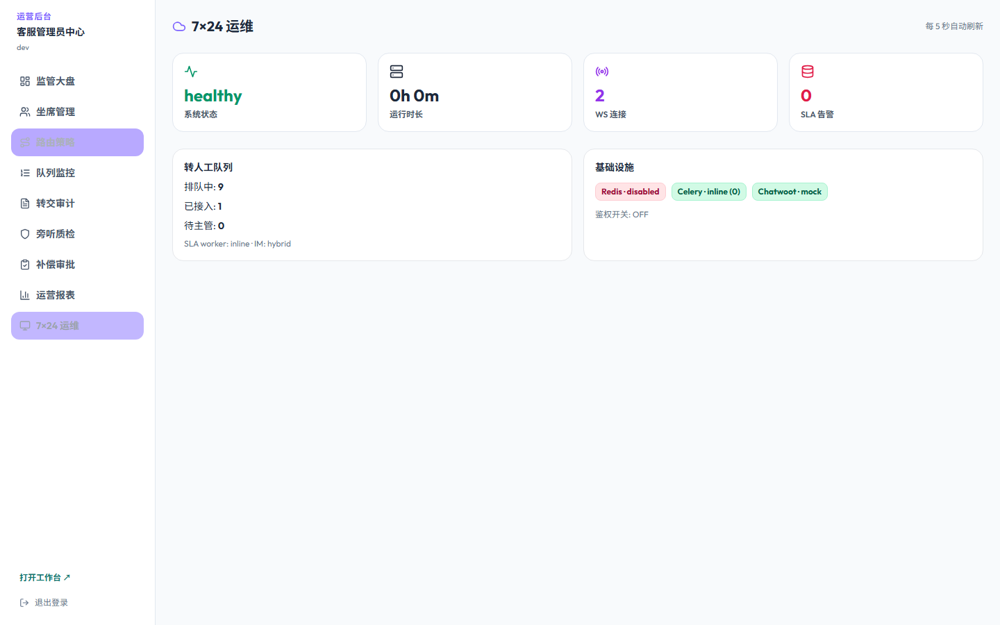
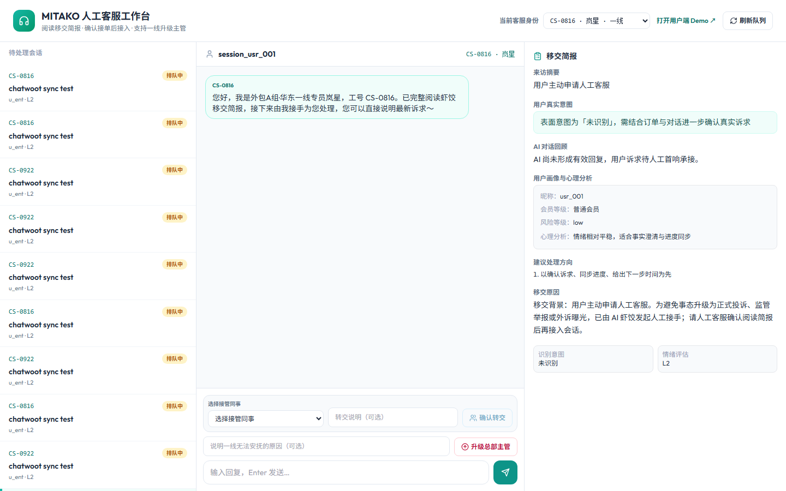

对外回复稿 · CEO/PM/技术联合口径 · 2026-06-29
客服 Agent 与私域运营 Agent 产研待确认问题回复
这份材料不把所有需求都简单答应。我们把甲方提出的问题拆成客服 Agent 主链路、视频审核、商品损伤、私域 Agent、仓库 Agent、基建与安全六类，明确先做什么、暂缓什么、用什么技术做、难点在哪里、需要甲方准备什么。
依据：待确认问题清单原文
依据：完整会议纪要
结合：MITAKO_Agent 当前代码
补充：JK-PromptReview 模型成本口径
一、CEO 结论：先做客服主链路，谨慎承诺视觉和跨部门自动化
本项目当前最有价值、最可控、最容易形成 ROI 的模块是客服 Agent 的文本 SOP 半自动闭环：工单分类、SOP 检索、后台状态读取、动作建议、人工确认、质检和审计。视频审核、商品损伤责任判断、仓库 Agent、私域 Agent 都是独立模块，不应该在第一阶段混成一个“大而全 Agent”一次性承诺。
CEO 口径：我们可以搭完整底座，但不承诺第一期把所有复杂判断自动化。涉及退款、拒赔、未成年人资料、商品损伤责任、私域主动触达和仓库执行的动作，必须先经过样本评估、规则确认和人工审批。
优先做
客服 Agent 文本 SOP、跨工单查询、多端幂等、跨天跟进、质检与 SOP 更新建议。
可评估做
开箱视频合规审核、商品损伤识别、未成年人材料 OCR，先做辅助审核，不自动定责。
后置试点
企业微信私域 Agent、飞书/企微任务流、仓库 Agent、催货 Agent，先接消息和任务，不接管业务终审。
不建议承诺
全自动判断商品损伤责任、全自动拒赔/赔付、无样本承诺视觉准确率、为本项目做大规模微调。

当前项目已有运营监控和业务审计基础，可作为客服 Agent 底座继续演进。

坐席台与人工接管已具备，适合承接高风险动作确认。
二、模块优先级：按功能模块切入，而不是一次性全答应
| 模块 |
对应原始问题 |
建议优先级 |
为什么 |
对外承诺边界 |
| 客服 Agent 主链路 |
4、5、6、8、9、10、11、14、18 |
P0/P1 |
最贴近降本，SOP 和权限可控，当前代码已有 handoff、SOP、Mock 状态机和审计基础。 |
可承诺先做半自动闭环；高风险动作必须人工确认。 |
| 基建与模型 |
7、12、13 |
P0 |
后台接入、记忆、模型路由、安全是所有模块的前置条件。 |
可承诺技术方案和 Mock 契约；真实接入依赖甲方 API。 |
| 未成年人退款材料审核 |
10 |
P1 |
规则清晰，但数据敏感。适合 OCR + 脱敏 + 材料完整性 + 人工终审。 |
不承诺 AI 自动终审；推荐百度 OCR 或本地脱敏优先。 |
| 开箱视频审核 |
1、3 的一部分 |
P1 评估 |
人工成本高，但视频成本、准确率和样本要求高。 |
只承诺 PoC 和辅助审核；ROI 算清楚再上线。 |
| 商品损伤识别与责任判断 |
2、3 |
P1/P2 评估 |
通用模型很难稳定区分划痕、反光、阴影、角度和真实损伤。 |
识别可辅助，责任判断不自动裁决。 |
| 私域运营 Agent |
15、16 |
P2 |
目标是销售转化，和客服售后是另一套指标和系统。 |
先做企微/飞书消息、商品库、标签、线索，不做骚扰式主动推送。 |
| 仓库 Agent |
17 |
P2 |
本质是跨部门任务收口，不是客服 Agent 的第一交付。 |
先用飞书/企微任务流，暂不强依赖 WMS。 |
三、基建类问题：后台接入、记忆系统、模型与部署
基建类问题是所有业务模块的前置。这里的关键不是“AI 能不能说”，而是系统能不能按权限读写、按规则审计、按成本路由模型。
原始问题 7
后台系统接入方式与权限边界
甲方希望 AI 接入企业数据库、工单系统、客服系统、订单系统、商品库、物流系统、仓库系统、财务/退款系统、企业微信、飞书；同时确认嵌入现有系统还是另做后台、每类系统读写权限、哪些动作可自动执行、是否支持账号级权限、操作日志、审计、回滚、工具调用沙箱或隔离层。
我们的回复
我们建议采用“嵌入现有系统 + 独立 Agent 控制台 + 工具调用隔离层”。不建议让大模型直接连数据库，也不建议第一期重做甲方的客服或仓储系统。
技术路线
- 后端用工具网关封装工单、订单、物流、售后、仓库、财务、商品库、企微、飞书接口。
- 只读接口优先接入；写接口按低、中、高风险分级。
- 工具调用必须校验租户、账号、角色、工单、订单和审批状态。
- 当前 MITAKO_Agent 已有 auth、handoff token、坐席身份绑定、业务审计事件和 Mock 契约基础。
难点与边界
- 真实生产期最大工作量不是模型，而是甲方 API、数据字典、权限矩阵和回调事件。
- 退款、补发、换货、拒赔、改地址、账号换绑、未成年人退款终审必须人工确认。
- 第一阶段建议用 Mock 契约把流程跑通，真实接口逐个替换。
原始问题 12
是否需要内部记忆系统？
第三方大模型 API 本身没有长期记忆，每次调用都需要传上下文。甲方希望保存用户历史沟通、当前工单状态、订单售后进度、SOP/政策、特殊案例、用户标签、私域偏好；并确认按用户、订单、工单还是会话维度存储，如何避免 token 成本过高，记忆是否过期、删除、脱敏。
我们的回复
需要，而且这是客服 Agent 的核心基建。没有内部记忆系统，模型每轮只能靠临时上下文，很难稳定处理跨天、跨工单、多端并发和私域跟进。
技术路线
- 短期：SQLite/业务库保存服务端 transcript、工单摘要、订单状态和审计事件。
- 中期：SOP 文档进入版本化知识库，按工单类型、SKU、售后类型检索。
- 长期：用户、订单、工单、会话、私域标签五层记忆；只给模型传必要摘要。
甲方需要准备
- 允许保存哪些字段，保存多久，哪些字段必须脱敏。
- SOP 版本、生效日期、适用范围和回滚负责人。
- 用户标签体系和隐私授权边界。
原始问题 13
模型选型、部署方式与成本估算
甲方倾向国内模型控制成本，目前文字为主，初估每日 token 成本约一两百元；有 58 万条工单数据，但在线聊天历史未完整留存。需要确认文本客服、图片识别、视频理解、证件 OCR 是否同一模型，是否需要本地模型，是否需要微调，日/月成本如何估算，图片/视频是否单独估算。
我们的回复
不建议一个模型包打天下，也不建议第一期微调。客服主链路用现有对话模型 + RAG + SOP 状态机 + 工具调用；OCR 用专业 OCR；视频审核用多模态模型做 PoC；商品损伤责任不做自动裁决。
| 任务 |
建议模型/工具 |
原因 |
成本口径 |
| 当前客服对话 |
沿用 MITAKO_Agent 已配置的 DeepSeek V4 Flash / Agnes 2.0 Flash，不擅自改模型名 |
当前代码已接入模型注册表、限流和流式调用；客服默认关闭思考模式，响应更快。 |
按真实对话轮次、上下文长度、转人工率另算。 |
| 低成本文本路由 |
Qwen3.5-Flash、Doubao-Seed-2.0-Lite 可作为后续模型网关候选 |
JK-PromptReview 已沉淀 Qwen / Gemini / Doubao 路由和成本展示。 |
本地口径：Qwen3.5-Flash 输入 ¥0.2/百万 token、输出 ¥2.0/百万 token；Doubao Lite 输入 ¥0.6/百万 token、输出 ¥3.6/百万 token。 |
| 证件 OCR |
百度智能云 OCR 身份证、户口本、出生证明等卡证接口优先 |
比通用多模态更便宜、快、稳定，字段结构化成熟。 |
按张计费，通常比把整图交给大模型更可控；高敏字段先脱敏。 |
| 开箱视频审核 |
Gemini 等全模态模型 + 抽帧 + 规则引擎 |
视频连续性、一镜到底、剪辑点需要多模态和时序判断。 |
必须单独核算视频 token/秒、抽帧数量、复核率和人工节省时间。 |
| 商品损伤责任 |
多模态模型 + SKU 标准图 + 规则 + 人工复核 |
通用模型很难稳定区分反光、阴影、拍摄角度和真实划痕。 |
先做 PoC，不给生产准确率承诺。 |
微调方面，当前不建议。58 万条工单更适合用于 SOP 梳理、FAQ 聚类、测试集构建、评测集和 RAG，不适合未经清洗直接微调。微调只有在规则稳定、样本标注稳定、RAG 仍无法满足时才评估。
四、客服 Agent 主链路：本项目第一优先级
这里是我们最应该对甲方重点推进的部分。它能直接降低客服重复劳动，同时风险可控。关键是把“AI 回复”升级为“按 SOP 和后台状态给出可审计动作建议”。
模块 B：跨工单、并发、跨天跟进
P0已具备部分基础
原始问题 4
跨工单、拆单、重复售后问题如何处理？
用户可能在 A 工单里提到 B 商品或另一个订单售后；人工客服现在会查看其他订单信息后直接处理。需要确认 Agent 是否支持跨工单查询、按账号/手机号/订单号/SKU 关联订单、自动拉取订单信息、避免重复回复/赔付/退款、需要哪些接口、是否要权限控制和日志审计。
我们的回复
支持，而且这比视频审核更应该优先做。技术上通过用户 ID、手机号脱敏值、订单号、SKU、工单 ID、售后记录建立关联；所有写动作使用订单级幂等键，避免重复退款、重复补发和重复赔付。
- 当前项目已经有服务端 transcript、handoff 简报和 business_audit_events 幂等审计基础。
- 需要甲方提供用户、订单、工单、售后记录、赔付记录只读接口。
- 跨工单查询必须有权限审计，不能让用户通过话术读取他人订单。
原始问题 8
多端并发接入与工单合并问题
同一用户可能从手机端、小程序端、语音端、企业微信等入口并发咨询。需要确认如何识别同一用户，多端会话合并还是分别处理，退款/补偿/改地址如何防冲突，是否需要会话锁、工单锁、订单级锁，工单合并规则由谁决定，语音/文字/小程序是否统一进入同一 Agent 状态。
我们的回复
这个需求必须做。我们的建议是：合并规则跟随甲方现有工单系统，Agent 侧补“统一身份映射 + 订单级锁 + 幂等键 + 审计”。多端消息可以统一进入事件层，但不强行把所有会话合成一个工单。
- 读上下文可以共享；写动作必须锁到订单或售后单。
- 两个端同时触发退款或补发，只允许一个审批进入有效状态。
- 语音先转文本进入同一状态机，音频理解可后置。
原始问题 9
跨天自动跟进与任务提醒机制
用户今天问物流，仓库或物流第二天才回复，系统需要在有结果后自动联系用户。需要确认是否基于工单状态变化触发、是否事件触发而不是轮询、仓库/物流回复后是否自动生成并发送回复、哪些场景可自动跟进、是否需要任务队列/提醒中心/未完成任务看板、失败或情绪升级如何转人工。
我们的回复
可以做，且应该采用事件触发。会议里也提到“等通知即可，避免定时任务耗费资源”。物流更新、仓库反馈、退款到账、用户补资料、人工审核完成都可以触发待办或回复草稿。
- 低风险信息类跟进可自动发送，例如“物流已更新”。
- 涉及赔付、拒赔、改地址、退款等动作只生成草稿或审批。
- 需要任务队列和提醒中心；超时或情绪升级转人工。
模块 C：SOP、质检、质疑与安全
P0/P1不自动越权
原始问题 5
规则冲突与“合理但超 SOP”的诉求怎么处理？
甲方担心 SOP 不是绝对正确，很多诉求超出规则但从购买体验、舆论风险、老客价值看应特殊处理。会议明确希望有更高级 AI 或“质疑者”角色，能质疑僵硬规则。需确认是否设计客服 Agent + 质检 Agent + 质疑/主管 Agent，如何识别并上报 SOP 与体验冲突，是否能设置历史消费、老客、舆论风险、商品特殊、情绪升级等维度，是否输出特殊处理理由，是否需要主管审批，是否反向推动 SOP 更新。
我们的回复
这个方向靠谱，而且应该做。但第一期不要真的拆成多个独立 Agent 系统，先用“单 Agent 底座 + 工作流角色 + 审批流”实现。AI 可以提出“特殊处理建议”，不能自行越权承诺。
- 判定维度：老客价值、历史售后、订单金额、舆论风险、商品特殊性、情绪等级、证据完整度。
- 输出内容：为什么 SOP 机械执行可能不合理、建议主管看什么证据、建议补偿或安抚边界。
- 主管审批后进入特殊案例库，作为 SOP 更新候选。
原始问题 6
SOP 质检与自我更新机制如何设计？
甲方希望 AI 不只是执行 SOP，还能发现 SOP 不合理、遗漏或容易引发舆论问题的地方。需确认是否能做质检 Agent，判断回复是否符合 SOP、是否安抚到位、是否废话或僵硬，是否生成 SOP 漏洞清单，SOP 更新是自动还是人工审核，SOP 存在知识库、配置后台、版本化规则库还是内部记忆系统，是否支持版本管理和回滚。
我们的回复
我们建议做“AI 发现问题 + 人工审核发布”的 SOP 迭代机制，不做 AI 自动改 SOP。SOP 应进入版本化规则库，知识库负责检索，配置后台负责发布，内部记忆保存命中和异常案例。
- 质检检查：工单类型是否错、SOP 分支是否错、是否手算退款、是否越权承诺、是否缺情绪安抚。
- SOP 更新流程：漏洞建议 - 主管审核 - 新版本发布 - 回归测试 - 可回滚。
- 当前项目已读取本地 SOP 文本并有最小状态机，下一步是逐段结构化和维护后台。
原始问题 10
未成年人退款审核能否由 AI 辅助处理？
该场景高频且复杂，需审核身份证、户口本、出生证明、监护关系、家长申请、用户退款意愿。会议明确四类判断：账户使用者是否未成年人、是否家长申请、家长与孩子是否存在监护关系、用户是否有退款意愿。需确认 OCR、材料完整性、监护关系链、申请人与账号使用者/付款人/收货人关系、结论分级、本地部署 OCR/脱敏、身份证号手机号户口本脱敏加密留痕、第三方大模型是否接触原始证件。
我们的回复
建议做，但只做辅助审核，不做 AI 自动终审。技术上 OCR 推荐优先使用百度智能云 OCR 的卡证类能力，原因是便宜、快、字段结构化成熟；再由规则引擎和 LLM 处理关系链解释。
- OCR：身份证、户口本、出生证明、流水等字段提取。
- 规则：年龄、监护关系、申请人/付款人/账号/收货人关系、材料缺失和矛盾点。
- LLM：把材料问题转成客服可读解释和补充材料话术。
- 隐私：原始证件默认不传外部通用大模型；先脱敏、加密、留痕。
原始问题 11
隐私、安全与用户“破壳”问题
甲方关心 prompt injection、jailbreak、越权提问、用户问无关内容、套取系统提示词/后台信息/其他用户信息、后台接口权限校验、敏感操作白名单、红队测试、能否输出安全测试报告。原文补充建议：安全方案不能只写模型会拒绝，应写权限隔离、脱敏、工具调用审计、人工确认、对抗测试组合方案。
我们的回复
这必须作为正式方案独立章节。我们不能只靠 prompt 约束，必须通过工具层权限、数据脱敏、审计和人工确认防护。当前项目已经补齐 handoff token、坐席身份绑定、安全审核后下发、block 转人工等 P0 门禁。
- 用户无关问题：礼貌拒绝并拉回客服范围。
- 套取后台、提示词、他人订单：拒绝、审计、必要时提升风险等级。
- 工具调用前：校验租户、用户、工单、订单、坐席角色和审批状态。
- 上线前输出红队测试报告：越权、跨租户、敏感信息、prompt injection、工具绕过。
原始问题 14
实施节奏：一次性全量实现还是按功能模块切入？
甲方会议讨论了两种路径：一次性搭好整体客服 Agent 系统再按优先级内测，或先从未成年人退款等规则清晰场景切入再逐步扩展。需确认是否建议一次性搭建完整 Agent 底座，是否先做 MVP，MVP 优先哪个场景；第一阶段是否包含文本客服自动回复、工单分类、SOP 检索、未成年人退款审核、物流自动跟进、跨工单查询；第二阶段是否包含开箱视频审核、商品损伤识别、多 Agent 质检、私域主动运营、仓库 Agent；以及内测如何做，甲方希望对常见业务点做盲测。
我们的回复
建议“一次性搭底座，分模块验收”。底座统一设计，包括会话、记忆、SOP、工具调用、审批、审计和模型网关；业务能力按 P0/P1/P2 验收，避免把视频、私域、仓库都压进第一期。
- P0：客服文本 SOP、工单分类、跨工单、幂等、跨天跟进、安全与审计。
- P1：未成年人材料 OCR、质检/质疑、开箱视频和商品损伤 PoC。
- P2：私域运营、仓库任务、催货 Agent。
- 内测方式：每个高频业务点做盲测，必须覆盖正常、边界、冲突和异常路径。
原始问题 18
多 Agent 架构是否必要？
会议中提出客服 Agent、质检 Agent、质疑 Agent、仓库 Agent、催货 Agent 等多个角色。需确认本项目是否需要多 Agent 架构，哪些角色是真正独立 Agent，哪些只是同一个 Agent 的不同工作流；建议角色包括客服 Agent、质检 Agent、质疑/主管 Agent、私域运营 Agent、仓库 Agent、催货 Agent；还需确认多 Agent 如何通信、是否增加开发复杂度和成本、是否可先用单 Agent + 工作流编排实现，后续再拆成多 Agent。
我们的回复
需要多角色能力，但第一期不建议做成很多独立系统。更稳的方式是先用单 Agent 底座 + 工作流编排 + 权限角色实现，等客服主链路、私域试点、仓库任务都跑出稳定边界后，再拆出真正独立 Agent。
- 客服 Agent：用户问题处理、SOP 分支、转人工。
- 质检 Agent：检查回复是否合规、是否越权、是否情绪安抚到位。
- 质疑/主管 Agent：处理合理但超 SOP 的特殊诉求。
- 私域 Agent：标签、商品推荐、销售线索。
- 仓库/催货 Agent：任务收口、催办、反馈同步。
- 通信方式：共享工单、任务、审计和事件总线，不让 Agent 之间自由聊天式串联。
五、视频审核与商品损伤：可以评估，但不能过度承诺
这两类需求看起来都属于“多模态”，但实际上是两个大坑：视频审核偏流程合规，商品损伤偏视觉检测和责任判断。它们不能与客服 SOP 主链路混为同一个承诺。
模块 D：开箱视频合规审核
P1 PoC先算 ROI
原始问题 1
开箱视频审核能力是否可实现？
用户售后提交开箱视频，人工客服逐帧查看，判断是否完整展示商品六面、是否一镜到底、是否有剪辑点、商品是否中途离开镜头、视频是否能证明从开箱到展示的连续性、是否能基于视频判断售后责任。需回答是否可以做合规审核，通用多模态还是视频切片/关键帧/规则引擎，能否判断六面展示、一镜到底、剪辑、离镜，能否输出合规/不合规/疑似不合规/需人工复核，置信度低于多少转人工，需要多少真实视频样本。
我们的回复
可以做 PoC，但不建议第一期承诺生产准确率。推荐技术方案是：视频上传后先抽帧和切片，再用 Gemini 等全模态模型做时序理解，同时用规则引擎检查关键节点，最后输出结构化结论。
技术选型
- 视频预处理：ffmpeg 抽帧、关键帧采样、镜头切换检测。
- 模型：Gemini 等全模态模型适合做视频连续性、画面理解和结构化说明。
- 规则：一镜到底、商品离镜、剪辑点、面单/未拆封快递盒、六面展示。
- 输出：合规、不合规、疑似不合规、需人工复核 + 理由 + 时间点证据。
难点与 ROI
- 视频成本要按秒、抽帧数量、模型 token 和复核率单独核算，不能沿用文字客服一两百元/日的估算。
- 如果视频平均审核人工耗时低、上传量不大，ROI 可能不如先做客服 SOP。
- 样本建议：PoC 每类 20-30 条；验收至少 200 条以上，覆盖剪辑、离镜、高反光、弱光、不同 SKU。
模块 E：商品损伤识别与责任判断
P1/P2责任不自动判
原始问题 2
商品损伤识别能力是否可实现？
甲方希望 AI 从图片或视频识别伤痕、划痕、破损、发错货。关注视频切片后能否识别商品是否有伤，是否有划痕、瑕疵、破损，高反光拍摄条件不好时是否还能识别，能否区分真实划痕和反光/阴影/角度误判。需回答图片和视频分别能做到什么程度，是否需要图像增强/去反光/关键帧筛选，是否需要商品标准图、SKU 图库、瑕疵样本库，发错货是否依赖商品库、订单 SKU、用户上传图三方比对，是否先做辅助质检，适合 MVP 还是第二阶段。
我们的回复
可以做辅助识别，但这不是 MVP 第一阶段。高反光、轻微划痕、阴影、拍摄角度都会造成误判，通用模型不一定稳定。发错货判断必须依赖订单 SKU、商品库标准图和用户上传图三方比对。
- 图片：先覆盖明显破损、缺件、明显错发、重伤场景。
- 视频：先抽关键帧，不直接让模型看完整长视频。
- 高反光：需要图像增强、补拍提示和低置信度转人工。
- 样本库：必须有 SKU 标准图、瑕疵样本、正常样本、不同光照样本。
- 承诺边界：只做辅助质检，不直接自动赔付或拒赔。
原始问题 3
AI 是否能判断商品损伤责任？
甲方希望结合视频前后逻辑判断损伤更可能是谁造成的，例如是否用户拆封时自己划伤、开箱视频是否支持售后主张、是否恶意售后或故意损坏、视频不完整但结合购买记录、沟通过程、外箱情况是否仍可合理赔付。需回答能否基于视频、图片、订单、历史售后、用户话术综合判断，纯大模型还是大模型+规则+置信度，是否输出依据，如何分级疑似用户造成/证据不足/应赔付/建议安抚补偿，拒赔、拉黑、重大补偿是否必须人工确认。
我们的回复
这是风险最高的部分。我们可以输出“责任倾向”和“证据链摘要”，但不建议承诺 AI 自动定责。责任判断必须结合规则、证据、历史售后和人工确认。
- 可做：证据完整度评分、疑似用户造成、证据不足、建议赔付、建议安抚补偿、主管复核。
- 不可自动做：拒赔、拉黑、大额补偿、恶意用户定性。
- 技术上采用大模型 + 规则引擎 + 置信度 + 人工复核，而不是纯模型推理。
- 会议里提到“把好人坏人分开”，这个目标正确，但不能让模型独立承担法律和客诉责任。
六、私域运营 Agent：独立模块，目标是转化，不是陪聊
私域 Agent 和客服 Agent 是两个系统目标。客服 Agent 目标是降本、准确、少犯错；私域 Agent 目标是留存、标签、线索和转化。建议 P2 试点。
原始问题 15
企业微信社群接入与商品库对接
甲方私域主要基于企业微信，希望 Agent 不只是陪聊，而是促进销售转化。需要接入商品库，实现商品推荐、主动消息推送、用户产品收集。需确认企微社群接入是否成熟，是否支持群消息监听、用户标签、关键词触发，能否接商品库，商品推荐需要商品名称、SKU、库存、售价、商品图、适用人群、活动、历史销量，是否支持主动推送，如何避免骚扰和企微风控，是否识别购买意向打标签，是否把社群互动转销售线索或客服工单。
我们的回复
可以做，但作为 P2 试点。我们建议跟随企业微信官方 OpenAPI、群机器人 Webhook、官方 CLI/工具链，不自研一套不稳定连接层。企微侧先做监听、标签、线索和人工提醒，主动推送必须受频率和授权控制。
- 商品推荐依赖商品库：SKU、库存、价格、商品图、活动、适用人群、历史销量。
- 社群消息进入事件层，识别兴趣、意向、售后风险和负面情绪。
- 高意向转销售线索；负面情绪转客服工单。
- 主动推送必须有频控、免打扰、人工审核和企微风控策略。
原始问题 16
私域运营 Agent 如何做用户标签与转化？
甲方强调最终目标要反映在销售上，“纯聊天没有意义”。核心方向是商品推荐、主动触达、用户产品收集、销售转化。需确认 Agent 是否能根据聊天自动打标签，标签体系由甲方提供还是我们设计，标签包括兴趣品类、价格敏感度、购买意向、售后风险、老客/新客、未成年人相关、高价值用户，能否按标签触发运营动作，生成每日社群运营总结，高意向用户、需人工跟进、热议商品、负面情绪、可推商品，能否与客服 Agent 打通。
我们的回复
标签和转化可以做，但必须由甲方确认标签体系和销售动作。我们可以提供标签引擎、商品候选、线索看板和每日总结；不建议第一期让 Agent 自主群发销售话术。
- 标签来源：群聊内容、私聊内容、商品浏览/购买、售后历史、人工运营标注。
- 动作：人工跟进、商品推荐候选、客服转工单、沉默用户唤醒候选。
- 日报：高意向用户、热议商品、负面情绪、待跟进用户、推荐商品。
- 与客服打通：售后处理完成后可进入私域维护，但要遵守用户授权和触达边界。
七、仓库 Agent：先做任务收口，不做仓库系统替代
原始问题 17
是否需要单独设计仓库 Agent？
甲方提到仓库沟通效率低，多人向仓库提需求，仓库响应慢、容易遗漏。希望仓库 Agent 统一接收需求、整理任务、每天询问仓库任务清单。需确认是否纳入本期，定位是否为仓库任务收口、催发货、催补货、处理缺货反馈、同步物流异常、给客服提供仓库状态，是否需要对接仓储系统，如果暂未打通是否可先用飞书/企微任务流，是否每天生成任务清单、按等级提醒、仓库回复后自动同步客服 Agent 或用户。
我们的回复
仓库 Agent 应纳入总体规划，但不建议作为第一期客服 Agent 的主交付。它本质是跨部门任务系统，先用飞书/企微任务流打通“创建任务 - 提醒 - 回复 - 同步客服”的闭环，不要求一开始接入 WMS。
- 任务类型：催发货、缺货、补货、退件清点、物流异常、补发登记。
- 字段：任务 ID、关联工单、订单、SKU、数量、优先级、截止时间、仓库回复、状态。
- 集成：飞书官方 CLI / OpenAPI 可用于应用、机器人和消息能力；企微侧跟随官方 CLI/OpenAPI 或机器人 Webhook。
- 边界：仓库 Agent 不直接回复用户敏感结论，先同步给客服 Agent 生成跟进建议。
八、甲方需要准备什么
| 模块 |
甲方需准备 |
为什么必须准备 |
| 客服 Agent |
SOP 最新版本、工单类型、退款/补发/换货/拒赔审批规则、脱敏历史工单和在线对话样本。 |
用于状态机、RAG、盲测和防止越权承诺。 |
| 后台接入 |
工单、订单、物流、售后卡片、财务、仓库、商品库 API 文档和数据字典。 |
没有接口就只能 Mock，不能进入生产闭环。 |
| 未成年人退款 |
材料清单、关系链规则、脱敏要求、人工终审规则、证件样本。 |
涉及高敏数据，必须先定合规边界。 |
| 开箱视频 |
合规、不合规、剪辑、离镜、高反光、弱光、不同 SKU 的真实视频样本。 |
没有样本不能承诺模型效果，也无法核算 ROI。 |
| 商品损伤 |
SKU 标准图、商品图库、瑕疵样本、正常样本、错发样本、不同光照样本。 |
通用模型不能凭空知道商品原本长什么样。 |
| 私域 Agent |
企微权限、商品库、标签体系、触达频率、风控红线、转化指标。 |
私域目标是销售转化，不是泛聊天。 |
| 仓库 Agent |
仓库任务字段、SLA、责任人、升级规则、飞书/企微工作流。 |
仓库 Agent 本质是任务系统，先定义流程再自动化。 |
九、资料依据与技术来源
本材料依据本地项目文档、当前代码、会议纪要和官方文档整理。涉及外部平台接入的部分，以官方文档为准。
当前项目代码
MITAKO_Agent 已有 DeepSeek V4 Flash / Agnes 2.0 Flash 模型注册、handoff、desk、admin、Mock 状态机、业务审计。
模型成本参考
JK-PromptReview 已沉淀 Qwen3.5-Flash、Doubao-Seed-2.0-Lite、Gemini Flash-Lite 的成本展示和三模型路由实践。
官方接入
飞书：优先使用飞书开放平台、官方 lark-cli、OpenAPI 和机器人能力。企微：优先使用企业微信官方 OpenAPI、群机器人 Webhook、官方工具链。
OCR 与视频
OCR 优先百度智能云卡证 OCR；视频审核使用 Gemini 等全模态模型做 PoC，并单独核算成本和复核率。
最终对外口径
我们建议先把项目定义为“客服 Agent 主链路 + 可扩展模块”的工程，而不是一次性承诺视频审核、商品定责、私域转化和仓库协同全自动。
第一阶段做客服 Agent 最有价值：SOP 可维护、后台状态可追溯、动作可审批、风险可审计、内测可盲测。视频审核和商品损伤要先做样本评估与 ROI 测算；私域和仓库是独立 P2 模块，应该跟随企微、飞书官方能力接入，先做任务和线索，不直接替代人工决策。